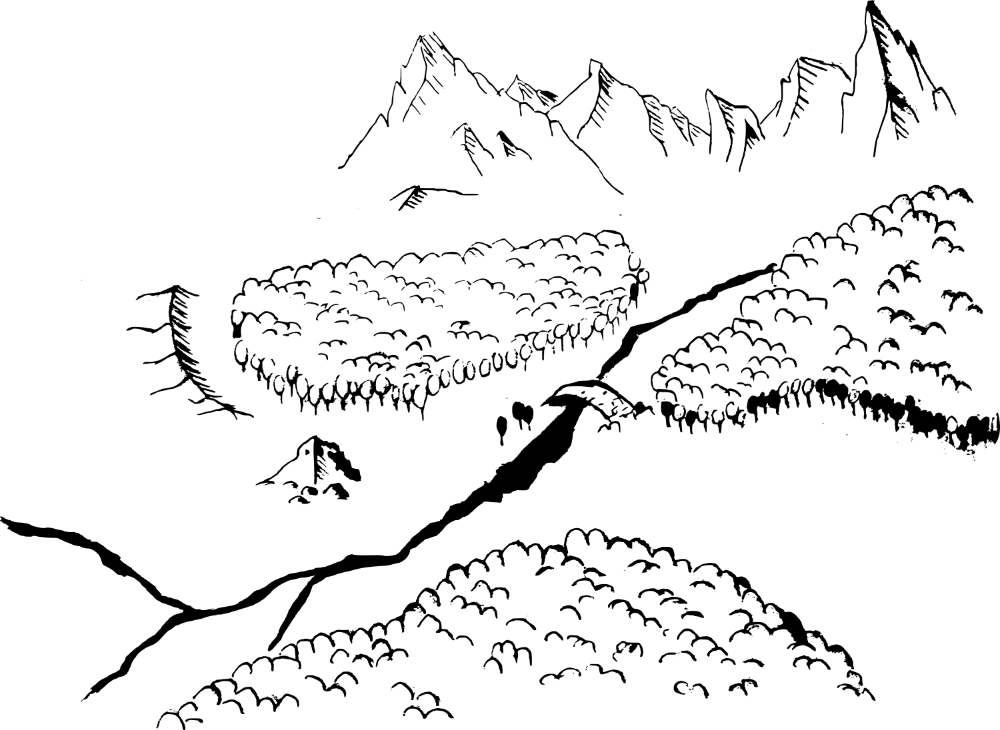

Geheimnis von Silvaria
Unterwegs im Wald
Die Tiere sind gemeinsam im tiefen Wald unterwegs. Sie suchen Vorräte für den kommenden Winter. Sie möchten ihre Kammer noch mit Eicheln, Haselnüsse und Kastanien füllen. Es ist ein sonniger Tag und alle sind gut gelaunt. Plötzlich hören sie Stimmen.
Findet heraus, woher die Stimmen kommen (1).
Die Probe ist erfolgreich: Die Tiere hören, dass die Stimmen von der nächsten Waldlichtung kommen.
Die Probe ist gescheitert: Die Tiere finden nicht heraus, woher die Stimmen kommen. Während sie noch diskutieren, kommt eine kleine Nachtigall angeflogen.
Die Nachtigall sagt:
Hallo ihr, wir kennen uns vom letzten Waldfest, wisst ihr noch? Ich heisse Marlene. Ich habe was komisches beobachtet: Es sind zwei Bären auf der nächsten Waldlichtung. Diese Bären habe ich noch nie im Wald gesehen. Sie zertrampeln alles! Könnt ihr euch bitte um dieses Problem kümmern?
Die Tiere gehen zu besagter Waldlichtung und entdecken, dass dort zwei grosse braune Bären stehen. Sie scheinen auf Reisen zu sein, denn sie haben eine Tasche umgehängt. Sie diskutieren angeregt über irgendetwas und fuchteln mit Pfoten wild in der Luft und zeigen immer wieder in verschiedene Richtungen. Die Tiere verstehen jedoch nicht genau, was sie sagen.
Findet heraus, was gesagt wird (lauschen oder fragen) (2).
Die Probe ist erfolgreich: Die Bären beginnen zu erzählen.
Lauschen ist gescheitert: Das Tier, mit der geringsten Würfelzahl, steht aus Versehen auf einen Zweig. Es knackt. Die Bären werden auf die Tiere aufmerksam und kommen auf sie zu.
Die Bären fragen:
Wer seid ihr und was tut ihr hier?
Fragen ist gescheitert: Die Bären sehen die Tiere skeptisch an und wollen nichts sagen. Sie drehen sich um und bewegen sich langsam von der Lichtung weg. Da kommt plötzlich Marlene wieder angeflogen und zieht dem einen Bär etwas aus der Tasche und bringt es den Tieren. Es ist eine Schatzkarte. Die Bären kommen auf euch zu. Sie sehen sich gegenseitig an.
Die Bären sagen:
Also gut, nun wisst ihr ja sowieso Bescheid.
Die Bärin beginnen zu erzählen:
Mein Name ist Bella und das ist Rudi. Wir sind beste Freunde und kommen aus dem dunklen Tannenwald hinter den Bergen. Zusammen entdecken wir die Welt und vor kurzem haben wir diese Schatzkarte gefunden. Die Karte hat und in diesen Wald geführt. Wir kennen uns jedoch überhaupt nicht aus hier. Könnt ihr uns helfen?
Die Schatzkarte wird der Gruppe überreicht
Die zerstörte Brücke
Da sich die Tiere sehr gut im Wald auskennen, kennen sie den Weg zum markierten Ort und die Gruppe zieht los. Bald gelangen sie an einen breiten reissenden Fluss. Die Tiere stellen fest, dass die Brücke in einem schlechteren Zustand ist, als sie dachten. Wahrscheinlich hat der letzte Winter seine Spuren hinterlassen.
Rudi fragt:
Wollen wir einfach so durch den Fluss gehen oder doch nicht lieber die Brücke reparieren? Der Fluss sieht doch recht gefährlich aus.
Der Fluss wird überquert
Überquert den Fluss (4).
Überqueren ist erfolgreich: Die Tiere kommen unversehrt auf der anderen Seite an.
Überqueren gescheitert: Die Tiere, das die Probe nicht bestehen, erhalten Schaden in Höhe des Würfelergebisses. Sie rutschen auf einem glitschigen Stein aus, schneiden sich an einem scharfen Stein, werden gebissen von einem Wassertier etc.
Wird die Brücke repariert
Die Tiere reparieren die Brücke mit dem umliegenden Holz. Es hat reichlich Material und so kommen sie schnell vorwärts. Nach getaner Arbeit überqueren sie die Brücke und treffen auf der anderen Seite eine Fähe mit ihren vier weinenden Welpen.
Die Fähe sagt:
Mein Name ist Carla und das sind meine Welpen. Wir konnten nicht nach Hause. Die Welpen sind noch zu klein, um den Fluss ohne Brücke zu überqueren. Vielen Dank für eure Hilfe!
Carla und ihre Welpen überqueren glücklich die Brücke.
Alle erhalten einen Freundschaftsstein.
Übernachtung in einer Ruine
Die Tiere setzen ihre Reise fort und gegen Abend kommen sie an einem zerfallenen Gebäude vorbei. Bella und Rudi möchten sich etwas ausruhen. Obwohl das Gebäude in schlechtem Zustand ist, bietet es der Gruppe genügend Schutz für die Nacht. Als die Tiere die Ruine betreten, fliegt ein grosser edler Uhu herbei und landet neben ihnen auf einem Steinhaufen, der früher mal Teil der Mauer war.
Der Uhu sagt:
Mein name ist Orion. Ich lasse euch ein, wenn ihr mir die Antwort auf folgendes Rätsel gebt:
Ich schlafe am Tag, in der Nacht jage ich, manchmal mache ich einen Buckel, manche von mir sind klein und manche sind gross. Welches Geräusch mache ich?
Die Frage wird von der Gruppe beantwortet. Antwort: Miau
Orion sagt:
Gut, ihr habt euch als würdig erwiesen. Ich heisse euch willkommen in meinem Reich. Jedoch ist es hier nicht besonders ruhig.
Sobald die Gruppe tiefer in die Ruine tritt, entdecken sie ganz viele kleine Kätzchen, die herumtollen und gar nicht ans Schlafen denken.
Orion sagt:
Das sind die Kätzchen von meiner guten Freundin, der Wildkatze Wilda. Ich passe auf sie auf, während sie auf der Jagd ist. Bitte erzählt ihnen eine Geschichte oder singt ihnen ein Lied vor, damit sie sich beruhigen. Meine Geschichten und Lieder kennen sie alle schon.
Die Gruppe singt, summt oder erzählt etwas.
Nachdem die Kätzchen eingeschlafen sind, legt sich auch die Gruppe auf das weiche Laub in der Ruine.
Am nächsten Morgen verabschieden sie sich von Orion und den kleinen Kätzchen und setzen ihre Reise fort.
Steinige Kletterpartie
Die Tiere erreichen einen steinigen Hang, der ihnen ganz offensichtlich den Weg versperrt.
Rudi sagt:
Wie kommen wir da nur weiter?
Bella sagt
Kommt, wir untersuchen zuerst mal den Hang. Vielleicht finden wir einen guten Weg.
Untersucht den steinigen Hang (2)
Probe erfolgreich: Die Tiere finden den Eingang zu einer stabil wirkenden Höhle sowie einen Weg zum Klettern.
Probe gescheitert: Die Tiere finden nur den Weg zum Klettern.
Die Tiere beschliessen, den Kletterpfad zu wählen:
Klettert den Hang hinauf (3)
Probe erfolgreich: Die Tiere kommen unbeschadet oben an.
Probe gescheitert: Die Tiere, das die Probe nicht bestehen, erhalten Schaden in Höhe des Würfelergebisses. Sie rutschen auf einem glitschigen Stein aus, werden von Ameisen attackiert, werden von einem herunterfallenden Stein getroffen etc.
Die Tiere gehen durch die Höhle
Die Gruppe entdeckt eine Höhle und sieht hinein. Der Tunnel sieht stabil aus und so machen sie sich auf. Sie kommen gut vorwärts, bis ihnen der Weg von einem Geröllhaufen versperrt wird.
Räumt die Steine aus dem Weg (2)
Probe erfolgreich: Die Steine lassen sich mühelos abtragen.
Probe gescheitert: Die Tiere, das die Probe nicht bestehen, erhalten Schaden in Höhe des Würfelergebisses. Sie rutschen auf einem glitschigen Stein aus, werden von Fledermäusen attackiert, werden von einem herunterfallenden Stein getroffen etc.
Als sie alle Steine weggeräumt haben, entdecken sie auf der anderen Seite der Trümmer den alten Dachs Raul.
Er ist überglücklich und bedankt sich überschwänglich.
Der Dachs sagt:
Ihr lieben, mein Name ist Raul. Gestern bin ich auf der Suche nach einem ruhigen Schlafplatz in diese Höhle gekommen. Doch wurde ich verschüttet und habe es nicht geschafft, mich selbst zu befreien. Ja, seht mich an, ich bin schon so alt und gebrechlich.
Raul trottet davon.
Alle erhalten einen Freundschaftsstein.
Neue Freunde
Schliesslich erreichen die Tiere endlich den Punkt, der auf der Karte mit einem X markiert ist. Dort finden Sie einen grossen runden Stein vor einer Felswand. Sie vermuten, dass der Stein einen Höhleneingang versperrt. Bella und Rudi werden ganz aufgeregt.
Die beiden rufen:
Endlich finden wir den Schatz! Wir sind unserem Ziel so nah.
Mit der Kraft der Bären ist es ganz leicht, den Stein wegzurollen. Aber was sehen Sie da? Sicher nicht das, was sie unter einem Schatz verstehen. Sie finden ganz viele Nüsse.
In diesem Moment werden sie von unzähligen Eichhörnchen umzingelt. Das grösste und mutigste von ihnen baut sich vor ihnen auf
Das Eichhörnchen sagt:
Ich bin Hops und wir sind das Eichhörnchenvolk der Eichelknacker und das hier ist unser Wintervorrat.
Offenbar bemerkt Hops, dass von euch keine Gefahr ausgeht. Er mustert euch neugierig und bemerkt die Karte.
Hops sagt:
Oh, und ihr habt auch unsere Karte gefunden! Die suchen wir schon lange! Wir haben sie erstellt, damit wir das Versteck wieder finden.
Mit diesen Worten schnappt er sich die Karte aus der Pranke von Rudi.
Bella und Rudi sehen ziemlich enttäuscht aus. Sie hatten etwas ganz anderes erwartet. Nüsse brauchen sie nun wirklich keine und schon gar nicht aus dem Vorrat anderer Waldtiere. Die Eichhörnchen bemerken die Enttäuschung.
Hops sagt:
Ihr lieben Tiere, kommt doch mit uns mit. Bald startet unser Eichelknacker-Fest.
Die Gruppe folgt den Eichhörnchen zum Festplatz. Es wird ein wunderschönes Fest. Und Bella und Rudi merken bald, dass ihre Enttäuschung verfliegt. Sie haben etwas viel Schöneres entdeckt als einen Schatz. Auf dem Weg haben sie ganz viele neue Freunde gewonnen. Sie entscheiden sich, bei den Eichhörnchen zu bleiben und ihnen zu helfen, um dann den Winter gemeinsam zu verbringen.
Jedes Gspänli kann mit Bella oder Rudi eine Freundschaft schliessen.
In Kürze
Hauptrollen
- Bella und Rudi die Bären
- Marlene die Nachtigall
- Carla die Fähe und ihre Welpen
- Orion der Uhu, seine Freundin die Wildkatze Wilda und ihre Kätzchen
- Raul der Dachs
- Hops das Eichhörnchen
Geschichte
- Die Gspänli hören stimmen [Probe]
- Gegebenenfalls macht Marlene die Nachtigall auf die zwei Bären aufmerksam
- Die Gspänli können mit oder ohne Marlene herausfinden was die Bären tuscheln [Probe]
- Bella und Rudi haben eine geheime Karte, von welcher entweder die Bärzen erzählen oder Marlene darauf hinweist
- Die Gspänli müssen über einen Fluss, entweder schwimmen
- oder eine Brücke reparieren, wofür Carla die Fähe dankbar wäre [Probe] [Freundschaftstein]
- Es wird Nacht und sie finden eine Ruine
- In der Ruine lebt der Uhu Orion, der sie, nachdem lösen eine Rätsels (es schläft in der Nacht, es gibt es in gross und klein, es macht ein Buckel, was für ein Geräusch macht es), in der Ruine schlafen lässt
- Am nächsten Tag erreichen alle einen steinigen Hang, auf den entweder geklettert wird [Probe]
- oder die Steine zu einem Eingang werden entfernt, wobei der Dachs Raul dankbar sein wird [Probe] [Freundschaftstein]
- Die Gspänli erreichen einen grossen runden Stein, das X
- Hops das Eichhörnchen, kommt sobald die Gpsänli versuchen den Stein zu entfernen und erklärt das sei der Notvorrat gewesen [Probe]
- Bella und Rudi haben neue Freunde gewonnen
- Die Eichhörnchen veranstalten ein Eickelknacker-Fest